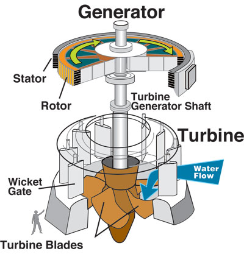

Energy from the Environment
The wind turbine is the poster child for extracting energy from our environment. However, there are numerous other devices that range from the mundane, such as hydroelectric dams, to the downright scary, such as the Atmospheric Vortex Engine which is another word for a controlled (?!) tornado.
Hydroelectric TurbineCourtesy of United States Army Corps of Engineers
The majority of these devices exploit the natural motion of a fluid – usually air or water – to generate electricity. The fluid motion is converted into rotary motion which drives an alternating current (AC) generator.
Hydroelectricty Generation
The hydroelectricity generator is a combination water turbine and AC generator – successor to the water wheel of old. Both exploit the potential energy that is converted to kinetic energy when water loses height, often enhanced by the building of a dammed reservoir.
Hydroelectricity power generation is a well established force in the fight to reduce greenhouse gas emissions.
Tidal Turbine
Locked within the rise and fall of tidal waters is an abundance of free energy. The water motion can be exploited by a tidal turbine, which is essentially an underwater version of a horizontal-axis wind turbine. Tidal turbines benefit from both a reliable and a predictable energy source – the rise and fall of the tide driven by the steady motion of the moon – unlike wind turbines which are at the mercy of the wind. As water is approximately 800 times denser than air, for the same energy output (rotor speed) an underwater turbine can be approximately 5 times smaller compared to an equivalent industrial wind turbine.
A number of tidal turbines are currently undergoing trials from New York City's East River in the US to the sea off Lynmouth in Devon, England.
Wave Power
Any surfer will confirm that waves contain plenty of energy. With this principle in mind, there are a number of devices that use wave motion to power electric generators.
- Pelamis P-750 is an articulated 'snake' that floats on the ocean surface. Its articulated joints are connected to hydraulic rams that move with the wave motion, forcing hydraulic fluid to move through hydraulic motors that power electric generators.
- Wave Dragon uses wave slosh to fill an elevated reservoir with water that is released through a water turbine.
- AquaBuOY converts the vertical bobbing motion of an anchored buoy into pressurized water by using a 2-cycle hose pump. A hose pump causes a fluid to move by stretching fluid-filled rubber tubes. A vertical, oscillating, counterweight mounted below the buoy stretches the hose pump tubes, forcing pressurized water through a turbine.
Atmospheric Vortex Engine
A novel, if somewhat alarming, theoretical device is the Atmospheric Vortex Engine, which would attempt to harness the energy in a tornado-like vortex. An artificial vortex would be initiated by heating air in contracting spiral passages and releasing it into a large chimney 200m in diameter and 100m in height. The resulting 50m diameter vortex would extend into the tropopause (on average 6km or 4 miles up) and power would be extracted using a turbine.
It is refreshing to see such a broad range of machines making their way from concept design to working prototype – no doubt helped in large part by Computer-Aided Engineering (CAE) analysis tools.
Feedback
Questions? Ideas? Problems?

Recent blog posts
- CFD Simulates Distant Past
- Background on the Caedium v6.0 Release
- Long-Necked Dinosaurs Succumb To CFD
- CFD Provides Insight Into Mystery Fossils
- Wind Turbine Design According to Insects
- Runners Discover Drafting
- Wind Tunnel and CFD Reveal Best Cycling Tuck
- Active Aerodynamics on the Lamborghini Huracán Performante
- Fluidic Logic
- Stonehenge Vortex Revealed as April Fools' Day Distortion Field
 Get our Blog feed
Get our Blog feed
Comments
Wave Hub
Wave Hub will be the world's largest wave farm taking residence in the coastal waters of Cornwall, England. The $56 million project was given the go-ahead by the UK Government on September 17, 2007. The hub will connect and transmit power ashore using a sub-sea cable (10 miles or 16km long) from prototype wave energy generators supplied by: